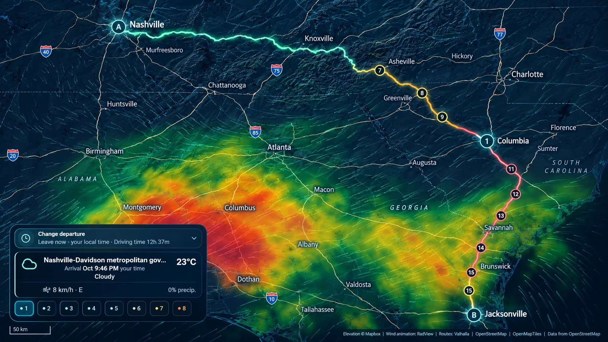
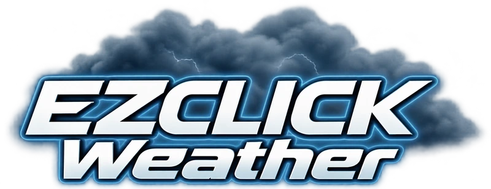
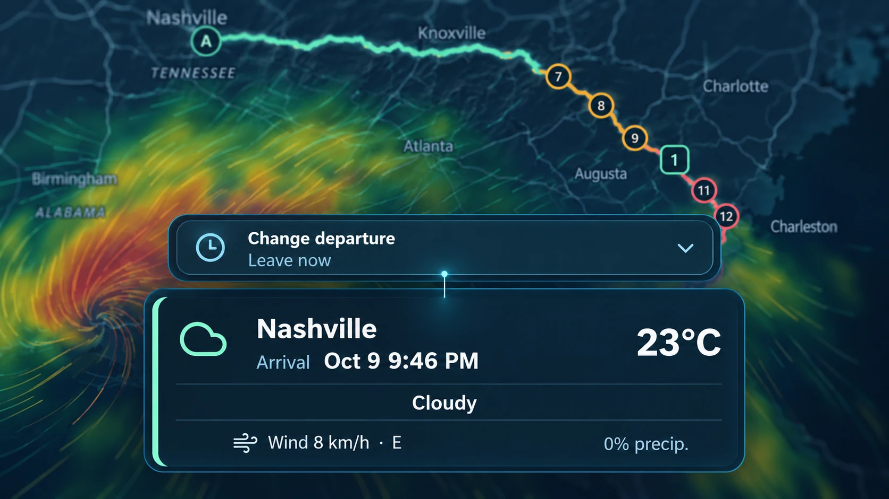
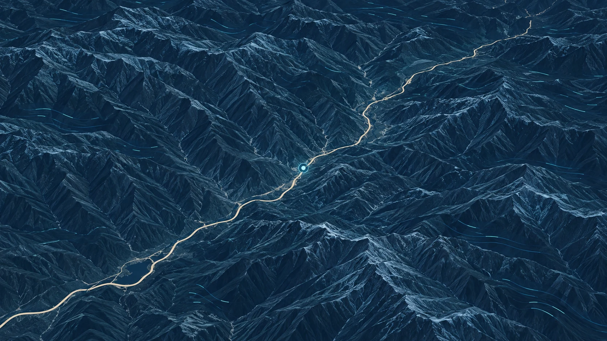
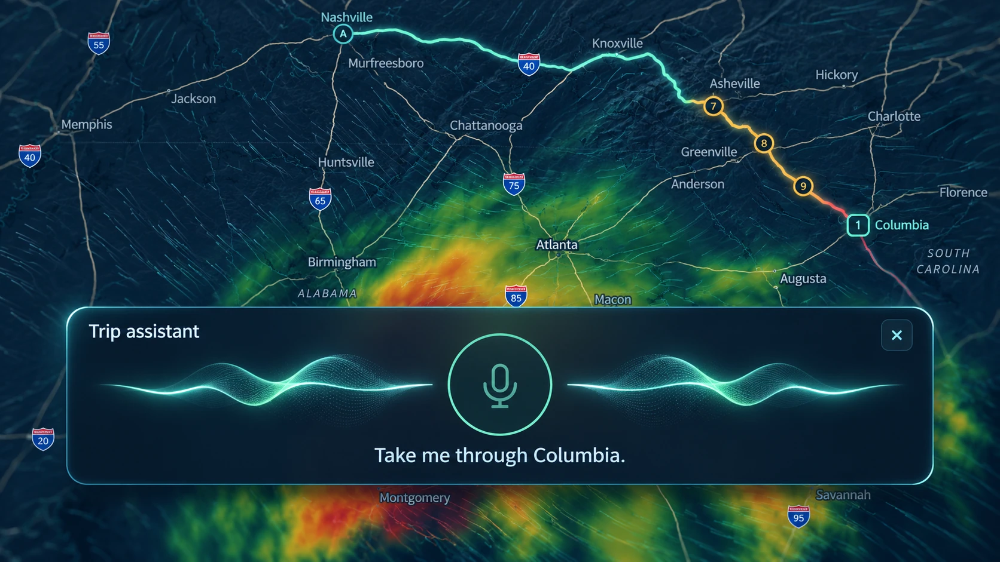
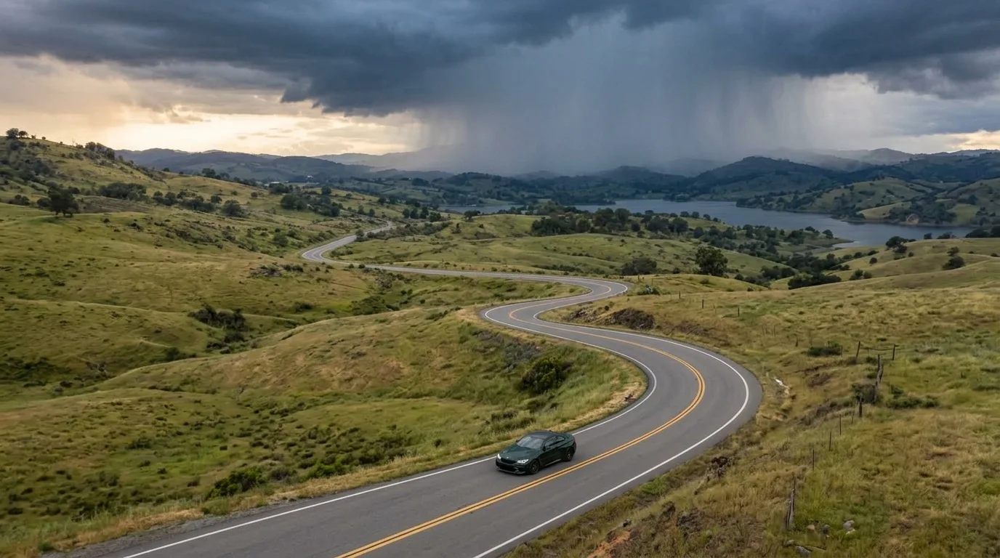
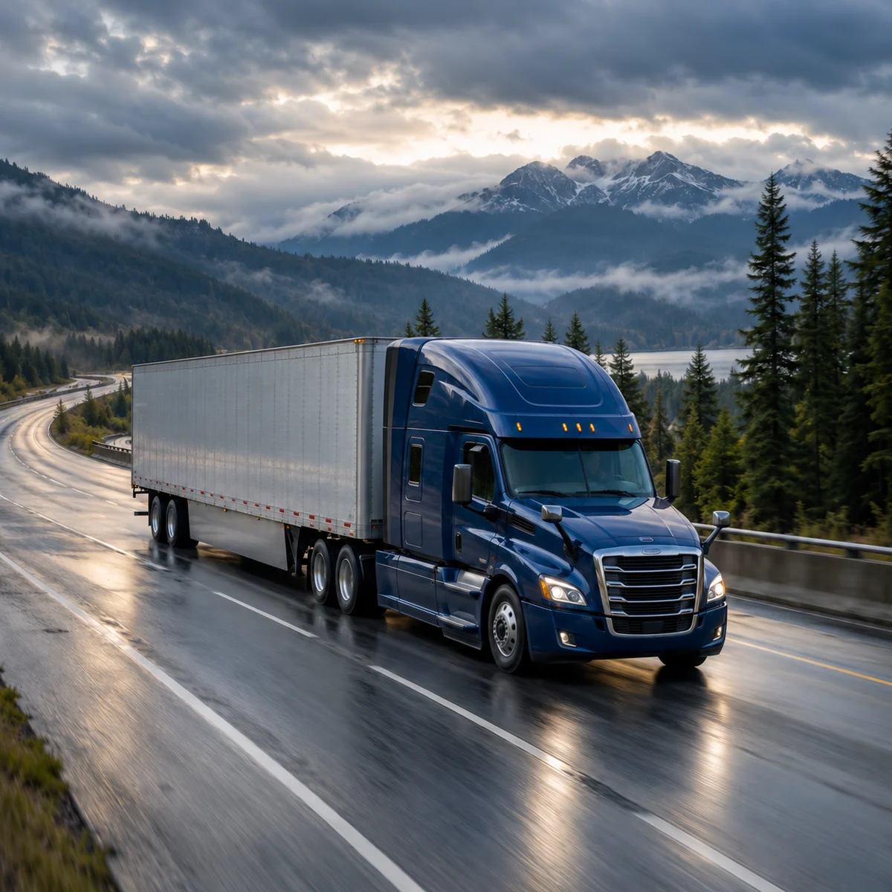
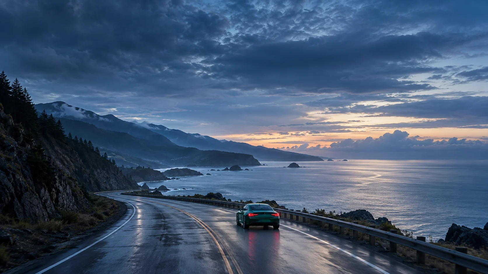

01Route overview
See the whole journey.
Explore weather along your route, with forecast checkpoints that help you see what’s ahead.

Open appA forecast for the road ahead
Conditions change. See what’s ahead on your route, at the time you expect to get there.
Plan your routeSee how it worksThe film couldn’t load. You can still explore the features below.
Along the way
See beyond the destination.
A little foresight for every
mile between A and B.
Explore weather along your route before you set off.
Build a route for your truck. See the weather along the way.
Speak your destination. Explore the weather along the way.
02 / Your journey, in detail
From the big picture to the next turn.
Explore the details that shape your drive.

01Route overview
Explore weather along your route, with forecast checkpoints that help you see what’s ahead.

02Arrival forecasts
Check temperature, wind and rain at your estimated arrival time. Change your departure to explore a different forecast.

033D terrain
Explore mountain passes and terrain in 3D. Check wind, rain and forecast conditions along your route before you set off.

04Voice assistant
Speak your destination or ask to travel through another city. Keep your journey in view as you plan.
Illustrative product views. Map and interface details may differ from the app. Plan your route ↗ Explore the actual app ↓
03 / Inside the app
Follow a recorded journey from Nashville to Jacksonville, via Columbia. Explore the route, its first forecast and the controls for making a change.
04 / Built around your drive
A weekend away. A cross-country trip. See the forecast along the route, not just at your destination.
Open the app and select car mode to plan your trip.
Plan in truck mode and review wind, rain and forecast conditions across the long haul.
The current truck profile is fixed. Check posted restrictions for your vehicle. Open the app and select truck mode to get started.


Ready when you are
Open in your browser. No installation needed.
Select car or truck mode.
Set your starting point and destination, then choose when to leave.
Review forecast checkpoints and adjust your plan before you go.
05 / A plan for your journey
Everyday forecasts or a more flexible journey.
Our planned memberships, at a glance.
$0USD
A clearer view of the road ahead.
$5USD / month
More ways to shape your journey.
Everything in Free, plus:
Planned additions
This is our planned membership lineup. Voice usage allowances will be published before Plus launches.
Use your phone or computer browser now.
Yes. Choose truck mode to plan with the app’s current truck profile and available road data. Always follow posted restrictions and road signs.
Yes. Add an intermediate city, drag a route point, or change your departure and planned breaks. Undo reverses recent route edits during your current session.
Route cards show forecasts for sampled locations at estimated arrival times. Changing your departure or planned breaks updates those estimates. Conditions between forecast points may differ.
The rain, snow and wind layers are model forecasts. The time slider explores the next 24 hours. Clouds currently show a recorded satellite sequence with its own observation times.
Mint indicates lower forecast concern, amber calls for a closer look, and red indicates higher concern. Purple means forecast data is unavailable. These are planning indicators, not official warnings or guarantees about road conditions.
Route checkpoints use National Weather Service forecasts at estimated arrival times. Rain, snow and wind map layers use NOAA GFS model forecasts. Point weather also uses Open-Meteo. Clouds currently show recorded satellite imagery with its own observation times.
You can open EZ Click Weather directly in your browser on a computer or phone. An internet connection is needed to load maps, forecasts and the voice assistant. Dedicated iPhone and Android apps are planned; release dates have not been announced.
Yes. The Navigate button can open destination B in Apple Maps, Google Maps or Trucker Path, depending on your device. The other app calculates its own route; intermediate points and truck settings are not transferred.
07 / Help along the way
A clear report helps us understand what happened.
Open Menu → Report a problem. Tell us what happened, what you expected and the steps that led to it.
You can review or turn off technical details before sending. Add a reply email if you would like a follow-up, and keep your report number.
Open the appInclude your device, browser and the steps to reproduce the issue. A screenshot can help; hide personal details before attaching it to your email.
Email support Opens your email app with a report template.
Your next journey starts here
Open in your browser. No installation needed.